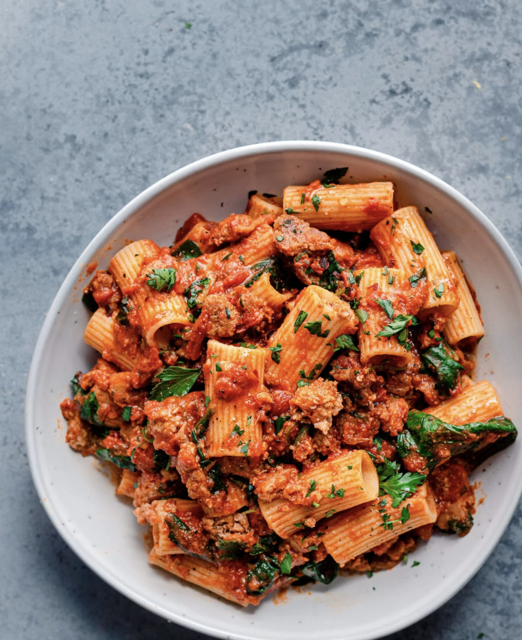

Pasta Recipes

Whether youre looking for a hearty and meaty pasta or to please all of your guests we have a flexible pasta recipe to satisfy your needs.
My vegan pasta salad is guaranteed to impress at all your summer BBQs and picnics! Pasta is coated in a creamy and dreamy roasted red pepper sauce and topped with a herby bread crumb topping for extra fresh flavor for an exquisite, grown-up pasta salad.
INGRIEDIENTS
- pasta
- parsley
- Bread crumbs
- Capers
- Lemon
- Walnuts
- Arugula
- Basil
- Roasted red peppers
- Garlic
- Smoked paprika
INSTRUCTIONS
- the bread slices on a sheet pan
- Add the walnuts in empty spaces in the pan
- Tearthe bread into small pieces and add it to food processor
- Make the red pepper sauce
- Add the roasted red peppers, toasted walnuts and half of the toasted bread crumbs
- Blend all of the previous items until a thick paste forms
- Pour the sauce over the room temp pasta
- Use spatula to coat the pasta with the sauce
- Add 3/4 cup of water until its saucy
- Add in chopped arugula and other mix ins desired
- Toss the mix ins into the pasta
- Add herby bread crumbs just before serving
- Enjoy!!